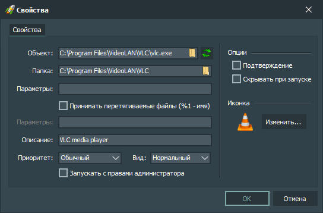

Имеется два типа окна настроек кнопки:
Горячие клавиши:
-
Alt + F4
После нажатия этой комбинации клавиш окно с настройками кнопки закрывается без применения изменений.
-
Enter
После нажатия этой клавиши окно с настройками кнопки закрывается с применением изменений.
-
Esc
После нажатия этой клавиши окно с настройками кнопки закрывается без применения изменений.